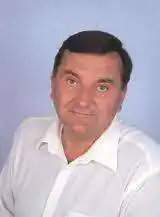
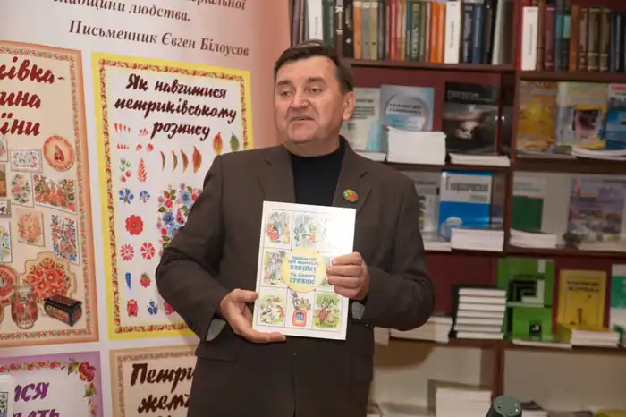

Народився Євген Васильович 27 листопада 1952 р. в Москві в сім'ї військового юриста і інженера – будівельника.
Раннє дитинство його пройшло в Ізмайлово, згодом місцем служби батька став Дніпропетровськ. У старших класах Євген серйозно захопився літературою і почав збирати свою домашню бібліотеку. Тоді ж з'явилось і перше громадське доручення – робота вожатим у молодших класах.
Коли юнакові виповнилося шістнадцять років, в обласних газетах "Прапор юності" та "Днепровская правда" з'явилися його перші публікації. Закінчивши школу, Євген вступив на історичний факультет Дніпропетровського державного університету, але роботу з дітьми не покинув. Згодом він став переможцем кількох конкурсів піонервожатих і, продовжуючи здобувати вищу освіту, поїхав працювати у Всесоюзний піонерський табір "Артек". Працюючи в "Артеку" вожатим дітвори, він, згадує нині, пережив свої найщасливіші роки. Може тому, що саме тут відчув потяг до писання, став шукати своє "чарівне перо". В результаті – перша написана ним книжка "Дни, проведенные у моря. Аркадий Гайдар в Крыму". Євген Білоусов пише для дітей. Головна тема творчості Є.Білоусова – історія України, виховання патріотизму і поваги до Вітчизни через книгу. Діти і дорослі залюбки читають історичні казки та легенди Є. Білоусова, що вже протягом багатьох років виходять у сімферопольському видавництві "Таврія" під загальною серійною назвою: "История Крыма для детей. Были. Легенды. Сказки". Серед них – "Сказка старого Аю-Дага", "Княжна Добронрава – дочь рыбацкая", "Легенда об Узун-Сырте", "Как стало соленым море Черное", "Как человек в Крыму здоровье нашел", "Как вера Христа в Крым пришла", "Сказка о волшебном якоре и славном городе Феодосии", "Как князь Владимир в Корсуне крестился", "Как Кирилл и Мефодий азбуку писали" тощо. У їх популярності неабияку роль відіграють яскраві ілюстрації художників Євгена Попова, Тетяни Лисюк, Олени Рязанцевої, Лади Стукан. Вони доповнюють гостросюжетні історичні оповіді автора, передають дух того часу, який завжди цікавий дитячій уяві. Дякуючи цій серії в 1998 році Є. Білоусов став лауреатом Державної премії Автономної Республіки Крим, а за книгу "Легенды Артека" —лауреатом конкурсу "Мистецтво книги України". У Євгена Васильовича є багато різних захоплень. Одне з них – польоти на безмоторних апаратах: планерах, парапланах,дельтапланах. Письменник згадує: "Коли у кінці 80-х народився новий авіаційний спортивний апарат— параплан, мені довелося бути серед тих, хто перший в Україні освоїв нову спортивну дисципліну. Активно займаючись спортом, приймав участь у чемпіонатах України, міжнародних турнірах. І писав книги для дітей". Євген Васильович написав дві книжки про спорт: "Музей крылатих" і "Солнце над рингом". Є. Білоусов має ще одне цікаве захоплення. Він збирає різні та рідкісні монети. Мабуть, інтерес до таких монет і надихнув письменника на створення книжки про українську грошову одиницю – гривню. Ця книжка має назву "Оповідання про маленьку Копійку та велику Гривню". Книжка написана для дітей допитливих, які люблять різні пригоди. А їх у книжці дуже багато. Разом з головними героями читач дізнається про все, що стосується грошей: як і де вони з'явилися, як виготовляли металеві гроші, як старі монети зробити новими і блискучими. В книжці гроші зображуються не тільки як реальні знаки, а і як казкові істоти. Гривня не лише мудріша за інші монети, а й володіє кількома іноземними мовами, перекладає з грецької та німецької мов. І в кругозір маленького читача непомітно входять найскладніші знання з історії стародавнього світу, ведеться некваплива історично грамотна розмова про суспільні відносини між людьми. Введені автором міфи та легенди надають його розповідям поетичності та достовірності. Вихід у світ цієї книжки (2001) став помітним явищем не лише в Україні, а й у світі. 2002 року книжка одержала найвищу світову нагороду за кращі твори для дітей – Диплом IBBY, який свого часу мали лише два українські письменники – Богдан Чалий (за поему для дітей "Барвінок") та Всеволод Нестайко (за трилогію "Тореадори з Васюківки") За рішенням Міжнародної ради з дитячої та юнацької літератури (IBBY) її внесли до Особливого Почесного списку ім. Г.К. Андерсена. Є. Білоусов пише книжки українською і російською мовами. Окремі з них отримували різні нагороди на всеукраїнських і міжнародних конкурсах і виставках. А за книжку "Тарасове перо" повість – казку про дитинство та юність Тараса Григоровича Шевченка письменникові присвоєно звання лауреата найважливішої премії України у галузі дитячої літератури – премії Кабінету міністрів України ім. Лесі Українки за літературно-мистецькі твори для дітей та юнацтва 2005 року. За цю книжку в 2006 році Є. Білоусов вдруге стає лауреатом Державної премії Криму. "Лесина пісня" – повість-казка в якій письменник розповідаючи про дитячі та юнацькі роки великої української поетеси Лесі Українки, вдало використовує уривки з її віршів, народні пісні, казки та перекази, повчання старших – все це сіє у душі дитини зерна любові до рідної мови та Батьківщини. Є.В. Білоусов – патріот України. У кожному його творі відчувається любов до Батьківщини і гордість за неї. Читаючи твори письменника "Моя держава – Україна","Славетні імена України", "Казки та легенди Криму" читачі дізнаються багато цікавого, героїчного і таємничого з нашої великої історії і ще більше будуть любити українську землю та людей, які живуть на ній. Євген Васильович не лише дитячий письменник, а й хороший організатор. Він організовує різні виставки, конкурси, фестивалі, активно пропагує дитячі книжки і дитяче читання. Письменник часто зустрічається з юними читачами, він уміє вести з ними невимушений діалог, розповідаючи про роботу над рукописом тієї чи іншої книги, що хоче написати в майбутньому. 2 квітня 2006 року в м. Севастополі у дитячій бібліотеці №16 відкрито "Музей дитячих книг письменника Євгена Білоусова". Книги, документи, експонати музею, а їх зібрано вже більше 1000, допомагають у вихованні у дітей інтересу до історії Криму, рідного міста, держави. Джерело: Національна бібліотека України для дітей, блог "Маленький читайлик"